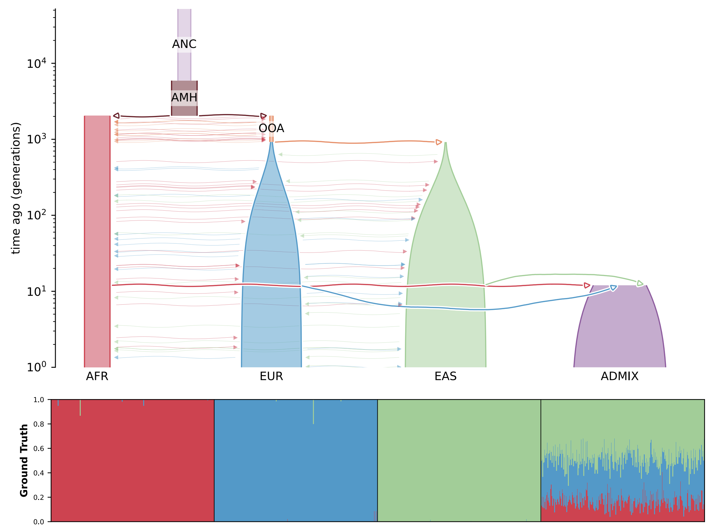

Day 1 - Part 1
Put your learning to the test with what you’ve covered so far.
A. General environment
B. Conda
For these exercises, make sure you have submitted a job to UCloud (resources set to 1 CPU and 1 hour). Unsure which command to use? Refer to the official Conda cheat sheet for guidance!
- Is the hpc-lab environment not automatically activated? Restart the job following the instructions.
- Double-check that your personal drive is properly mounted (e.g.
ls). Can you see a directory with your name listed (e.g. NmeSurname#XXXX)? Restart the job following the instructions. - If your session gets disconnected while completing exercise: Part 2 - Build your conda environment, you’ll need to (re)deactivate
hpclab-env, activate your own environment, and navigate back to your working directory!
Type the answers with no white-spaces!
C.1. What is the version of conda
C.2. List all environments available to you. What is the name of the active environment
C.3. Active hpclab-env environment
C.4. What is the version of the package cookiecutter (use a conda command)
C.5. How many packages are available?
C.6. Export the environment specifications and save it to your personal drive (e.g.<yourname-hpclab>.yml)
C.7. Deactivate the environment
conda info
conda env list ; conda info --envs
conda activate
conda list cookiecutter
conda env export C.1. conda info, v=24.9.2
C.2. conda env list, the active one will be indicated with an asterisk (*).
C.3. conda activate hpclab-env
C.4. conda list cookiecutter, v=2.6.0
# packages in environment at /work/HPCLab_workshop/miniconda3/envs/hpclab-env:
#
# Name Version Build Channel
cookiecutter 2.6.0 pyhca7485f_0 conda-forgeC.5. conda list |grep -v '#' | wc -l, 72 packages
C.6. conda env export --from-history > <yourname-hpclab>.yml
C.7. conda deactivate
Inspect numpy version installed in the hpclab-env. Get the version and the full revision id (git_version). Hint: you can find this information in the version.py file! Check the installed libraries (lib) and look inside python packages.
/work/HPCLab_workshop/miniconda3/envs/hpclab-env/lib/python3.12/site-packages/numpy/version.py- Bonus.1. Numpy version
- Bonus.2. Full ID version
cat /work/HPCLab_workshop/miniconda3/envs/hpclab-env/lib/python3.12/site-packages/numpy/version.py"""
Module to expose more detailed version info for the installed `numpy`
"""
version = "1.26.4"
__version__ = version
full_version = version
git_revision = "9815c16f449e12915ef35a8255329ba26dacd5c0"
release = 'dev' not in version and '+' not in version
short_version = version.split("+")[0]Let’s prepare to build our own environment. First, make sure to deactivate the hpclab-env environment (if you haven’t yet). Next, create a new directory by running mkdir envs in your mounted personal drive (e.g. AlbaRefoyoMartínez#0753). This directory will be used to save your environments.
# Deactivate hpclab-env
conda deactivate
# Navigate to your personal drive and create a new envs directory with the command mkdir envs
cd <yourpersonal-drive> # AlbaRefoyoMartínez#0753
mkdir envs Is the full path of your envs directory /work/<NameSurname#xxxx>/envs?
Since Miniconda is already pre-installed, you’re ready to create your first environment. Just follow these steps:
- Create a new environment using
--prefix PATH(for example,/work/<YourNameSurname#xxxx>/envs/<name-env>) and Proceed yes (yor enter). N.B you can either name or prefix your environment. We will be using the prefix as miniconda is installed in a directory where you do not have writing privileges. - Check the available environments. How many environments do you see?
- Activate the environment
- Check which python executable is being used (Hint:
which python)? Does this executable belong to your conda environment?? - Search for snakemake https://anaconda.org/. Copy the installation command and run it in your activated conda env. This might take some time!
- Execute the help command:
snakemake -h. Seems like snakemake is now installed in our environment! - Does the python executable now belong to your conda environment??
- Is your python version >= 3.12 and packaged by conda-forge? . IF NOT, use one of the following commands:
conda update -c conda-forge pythonorconda install -c conda-forge python=3.12.7 - Let’s search for
bowtie2. Do you get an error? which channel is needed (Hint: search for bowtie2 in https://anaconda.org/)? - Let’s add the missing channel:
conda config --add channels xxxx. Hint: it is a repo that offers a wide range of bioinformatics software and tools. - Let’s search for
bowtie2again. Is bowtie2 now available? - Export the conda you have created and save the yml. Did you use
--from-historycommand?
- Deactivate the environment
Here are some of the commands you need for the exercise.
# use conda or mamba commands
conda create --prefix /work/envs/<myenv>
conda install --channel <CHANNEL-NAME> --name <ENV-NAME>
conda env list # OR conda info --envs
conda update -c conda-forge python
conda activate <ENV-NAME>
conda config --add channels bioconda
conda search <PKG-NAME>
conda deactivate
conda env export > env.yml- The syntax to create a new environment is:
conda create --prefix /work/<NameSurname#xxxx>/envs/<test-env> - There are 4 environments available:
base,hpclab-env,snakemakeand the one you just created. - conda activate /work/<NameSurname#xxxx>/envs/
- The executable is located at
/usr/bin/pythonin the system - conda install bioconda::snakemake
- snakemake is working!
- Yes, now is in the bin of our env:
/work/<NameSurname#xxxx>/envs/<test-env>/bin/python - It should be!
conda search bowtie2. Yes. Go to anaconda.org and search for “bowtie2” to confirm it is available through conda and which software channel it is provided from. You will find that it is available via the “bioconda” channel: https://anaconda.org/bioconda/bowtie2.conda config --add channels bioconda. Use add, so that it has a higher priority. The syntax to install packages is:conda install --channel <CHANNELNAME> --name <ENVNAME> <SOFTWARE>- Yes!
- When using
--from historyflag, conda only exports explicitly installed packages (without the automatically resolved dependencies). This results in a simpler and smaller file which is more flexible but might lead to slightly different environments on different systems:conda env export --from-history > environment.yml. Not using--from-historywould ensure replicability but will also introduce packages that may not be compatible across platforms. conda deactivate
If you are running this exercise locally, download the environment YAML file first:
- Create a Conda environment using the provided ‘test-env.yml’ file (
/work/HPCLab_workshop/data/test-env.yml). Please, use the flag--prefixfor this purpose. - Once the environment is set up, activate it (do not forget to deactivate active environments)
- Verify the installed packages (you will also see other dependencies installed). Hint: check the
test-env.ymlto see which dependencies are included in this conda environment. - Uninstall the ‘cookiecutter’ package from your environment. Then, check again the list of all installed packages. Did you remove cookiecutter successfully?
- Update Python to the latest compatible version. Which version is that? Hint: check the prompt from the
conda updatecommand - Try to install the latest numpy version using
conda install numpy=2.1, could you successfully install it?
- Once you are done, delete the environment.
The solution includes commands with my paths. Please modify them accordingly with the name of your personal drive.
# 1.
conda env create --file /work/HPCLab_workshop/data/test-env.yml --prefix /work/AlbaRefoyoMartínez#0753/envs/test-env
# 2.
conda deactivate; conda activate /work/AlbaRefoyoMartínez#0753/envs/test-env
# 3.
conda list
# 4.
conda remove cookiecutter ; conda list
# 5. Check prompt from running this command
conda update python # 3.7.16
# OR conda list | grep python
; conda list python
# 6.
conda env remove --prefix /work/AlbaRefoyoMartínez#0753/envs/test-env C. Containers
Apptainer/Singularity was specifically designed for HPC platforms; however, the UCloud server does not support it for regular users. As a result, container exercises will need to be run locally. We will be using Docker locally, as it is commonly employed for developing images. Please remember to install Docker Desktop, as noted on the Welcome page. For further guidance, refer to the official Docker cheat sheet.
In this exercise, we will utilize the fastmixture Docker image which is available on DockerHub, the repository for docker images. The aim is to understand how to run containerized software. To enhance the learning experience, we have chosen a simple genomics analysis, an efficient software tool, and a sample dataset. Focus on executing the commands, ensuring that this approach is easily adaptable to your own projects and software needs.
Fastmixture is a software designed to estimate ancestry proportions in unrelated individuals. It analyses genetic data to determine the percentage of various ancestral backgrounds present in a given individual. This tool is essential for understanding demographic histories and modeling population structure. You can view the results of running such analyses in the figure below.
Here are some optional resources you might typically review before running the software (though not required for this exercise):
- Santander, Cindy G., Alba Refoyo Martinez, and Jonas Meisner. “Faster model-based estimation of ancestry proportions.” bioRxiv (2024): 2024-07 link to Preprint.
- Software GitHub repository link.

Pull
fastmixtureimage from DockerHUb using the following command:Terminal
docker pull albarema/fastmixture:v0.93.3Make sure to pull version v0.93.3.
Download and unzip the toy data (you may move the files to any preferred folder on your laptop)
What is the command you need to run container? Do not forget to mount the data (using the flag
-v /path/toy:/path/mnt). Before executing the software, verify that the data has been correctly mounted (e.g. running thelscommand inside the container).Run
fastmixturesoftware using the command below. We will set K to 3 because there are three populations (clusters) in our PCA analysis (exploratory analysis). Both--bfileand--outrequire the prefix of a filename, so do not include the file extension. If you have checked the toy folder, you will find the files namedtoy.data.*; therefore, use--bfile toy.data.In
fastmixture, the main arguments used in this exercise are:--K: Specifies the number of ancestral components, representing the sources in the mixture model.--seed: Sets the random seed to ensure reproducibility of the analysis across different runs.--bfile: prefix for PLINK files (.bed, .bim, .fam).--out: Prefix output name.
fastmixture --bfile <input.prefix> --K 3 --threads 4 --seed 1 --out <output.prefix>Do you have the results in the folder on your local system? You should look for files named
toy.fast.K3.s1.{ext}, where{ext}=["Q", "P", "log"].
- Docker
docker pull albarema/fastmixture:v0.93.3 # Pull
docker run --cpus=8 -v `pwd`/toy/:/data/ albarema/fastmixture:v0.93.3 fastmixture --bfile data/toy.data --K 3 --out data/toy.fast --threads 8 # run the command - Apptainer on HPC / local machine: on your local machine you will need to modify lima.yml to make the current directory (pwd) writable. Alternative, write the data out to /tmp/lima!
apptainer pull docker://albarema/fastmixture:v0.93.3
apptainer run fastmixture_v0.93.3.sif fastmixture --version
# on local machine (using LIMA)
cd toy # from data folder
apptainer pull /tmp/lima/fastmixture.sif docker:/albarema/fastmixture:v0.93.3
apptainer run /tmp/lima/fastmixture.sif fastmixture --bfile toy.data --K 3 --out toy.fast --threads 8Containers bonus exercises
There are several repositories where you can find containerised bioinformatics tools:
If you want to run the first bonu exercise locally, use Docker. However, if you have access to an HPC platform, check the documentation to see if Singularity/Apptainer is installed; now would be a great time to give it a try. Don’t hesitate to ask for help if needed!
In the first bonus exercise, you will get to test other containerised tools:
Alternative, explore one of the container images repositories and select a tool that you use regularly. Once you have pulled an image, we recommend starting by running the --help command, as all softwares have one. This command displays the help documentation of the program, verifying that our image is functioning correctly and includes the intended software.
Make sure to mount a directory when running a container. This ensures that any data generated will be saved to your host system. If you do not mount a directory and use the --rm command, all generated data will be lost once the container stops.
- Use
--rmflag to remove automatically the container once it stops running to avoid clustering your system with stopped containers. - Use
--volumeto mount data into the container (e.g./data), for example, your working directory if you are already located in a project-specific dir.
BLAST - Build a BLAST protein database from zebrafish protein sequences.
Zebrafish is a widely used model organism in genetics. This small dataset will facilitate quick results, allowing us to focus on how to run different bioinformatics tools so that you can easily adapt the commands in future projects.
Docker: follow the steps in Running BLAST: https://biocontainers-edu.readthedocs.io/en/latest/running_example.html.
docker pull biocontainers/blast:2.2.31
docker run biocontainers/blast:2.2.31 blastp -help
mkdir zebrafish-ref
docker run -v `pwd`/zebrafish-ref/:/data/ biocontainers/blast:2.2.31 curl -O ftp://ftp.ncbi.nih.gov/refseq/D_rerio/mRNA_Prot/zebrafish.1.protein.faa.gz
docker run -v `pwd`/zebrafish-ref/:/data/ biocontainers/blast:2.2.31 gunzip zebrafish.1.protein.faa.gz
docker run -v `pwd`/zebrafish-ref/:/data/ biocontainers/blast:2.2.31 makeblastdb -in zebrafish.1.protein.faa -dbtype protApptainer: you might need to mount data folders if you test the container on your own computer! Ask if you an in doubt!
apptainer pull docker://biocontainers/blast:2.2.31
apptainer run blast_2.2.31.sif blastp -help
mkdir zebrafish-ref
apptainer run blast_2.2.31.sif curl -O ftp://ftp.ncbi.nih.gov/refseq/D_rerio/mRNA_Prot/zebrafish.1.protein.faa.gz
apptainer run gunzip zebrafish.1.protein.faa.gz
apptainer run blast_2.2.31.sif makeblastdb -in zebrafish.1.protein.faa -dbtype protBOWTIE2
Singularity:
# download the image
singularity pull images/bowtie2-2.5.4.sif https://depot.galaxyproject.org/singularity/bowtie2%3A2.5.4--he20e202_2
# run the image: singularity run <PATH-TO-IMAGE> <YOUR COMMANDS>
singularity run images/bowtie2-2.5.4.sif bowtie2 --helpAre you ready to build your own docker image? Let’s get started by building a Jupyter Notebook container! We’ll share several helpful tips to guide you through the process effectively. You might not be familiar with all the concepts, but google them if you’re uncertain.
- Create a Dockerfile in a project-specific dir (e.g.: sandbox-debian-jupyter). We will add a command to clean up the package after installation which is a common practice to reduce the image size.
Dockerfile
FROM debian:stable
LABEL maintainer="Name Surname <abd123@ku.dk>"
# Update package list and install necessary packages
RUN apt update \
&& apt install -y jupyter-notebook \
python3-matplotlib \
python3-pandas \
python3-numpy \
&& apt-get clean \
&& rm -rf /var/lib/apt/lists/* # cleanup tmp files created by apt
# You may consider adding a working directory
WORKDIR /notebooksFrom the project-specific dir, build the Docker image using, for example,
docker build -t sandbox-debian-jupyter:1.0 .Testing the custom image. Let’s verify if the custom image functions as expected, running the following command:
Terminal
docker run --rm -p 8888:8888 --volume=$(pwd):/root sandbox-debian-jupyter:1.0 jupyter-notebookJupyter typically refuses to run as root or accept network connections by default. To address this, you need to either add --ip=0.0.0.0 --allow-root when starting Jupyter to the command above or uncomment the last line in the Dockerfile above (CMD ["jupyter-notebook", "--ip=0.0.0.0", "--allow-root"]). Test this before moving on!
Alternatively, you can run the container with the flag --user=$(id -u):$(id -g)to ensure that files created in the container have matching user and group ownership with those on the host machine, preventing permission issues. However, this restricts the container from performing root-level operations.
For broader usability and security, it is advisable to create a non-root user (e.g. jovyan) within the Docker image by adding user setup commands to the Dockerfile (see below). This approach makes the image more user-friendly and avoids file ownership conflicts.
Dockerfile2
##
## ----- ADD CONTENT FROM Dockerfile HERE -----
##
# Creating a group & user
RUN addgroup --gid 1000 user && \
adduser --uid 1000 --gid 1000 --gecos "" --disabled-password jovyan
# Setting active user
USER jovyan
# setting working directory
WORKDIR /home/jovyan
# let' automatically start Jupyter Notebook
CMD ["jupyter-notebook", "--ip=0.0.0.0"]- Use
--rmflag to remove automatically the container once it stops running - Use
--volumeto mount data into the container (e.g./home/jovyan) - Use
--fileflag to test to dockerfile versions (default:“PATH/Dockerfile”)
docker build -t sandbox-debian-jupyter:2.0 sandbox-debian-jupyter -f sandbox-debian-jupyter/Dockerfile2Now that we have fixed that problem, we will test A. using a port to launch a Jupyter Notebook (or Rstudio server) and B. starting a bash shell interactively.
# Option A. Start jupyter-notebook or on the server
docker run --rm -p 8888:8888 --volume=$(pwd):/home/jovyan sandbox-debian-jupyter:2.0
# Option B. Start an interactive shells instead
docker run -it --rm --volume=$(pwd):/home/jovyan sandbox-debian-jupyter:2.0 /bin/bashIf you make changes to the container (incl. installing software), you need to commit the changes to a new image (docker commit).